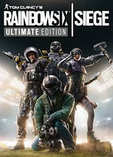

Battlefield V
Battlefield V est un jeu que j'apprécie beaucoup car il nous met dans la peau d'un soldat et nous entraine dans l'action avec un gameplay dynamique et une bande-son incroyable.
Doom
Doom est un FPS incroyable de part sa bande-son ,son gameplay avec chaque arme qui est unique et son level design.
Shadow of the Tomb Raider
Shadow of the Tomb Raider est un jeu d'aventure dans lequel on explore d'ancienne ruine. IL nous donne l'impression de voyager a trever le temp est l'espace
Detroit become humane
Detroit become human possède une histoire captivante qui pousse à la réflexion les joueur au sujet de l'humanité. Chaque personne a une histoire différente car nous faisons tous des choix différent.
Horizon zero dawn
 Horizon zero dawm nous place dans un monde post-apocaliptique où on trouve un peu partout les vestige du monde modern. Notre but est de comprendre comment on en est arrivé la et pourquoi y-a-t-il une nouvelle éspèce d'animaux : les machine et quel est leur rôle. L'histoire dans ce jeu est incroyable et le gameplay nous offre beaucoup de liberté.
Horizon zero dawm nous place dans un monde post-apocaliptique où on trouve un peu partout les vestige du monde modern. Notre but est de comprendre comment on en est arrivé la et pourquoi y-a-t-il une nouvelle éspèce d'animaux : les machine et quel est leur rôle. L'histoire dans ce jeu est incroyable et le gameplay nous offre beaucoup de liberté.
Raimbow six siege
Raimbow six siege est un jeu de tir compétitif réaliste. Il possède énormement de personnage avec des capacité différente qui permet a tout les joueurs d'inventer de nouvelle stratégie pour battre l'équipe advairse.